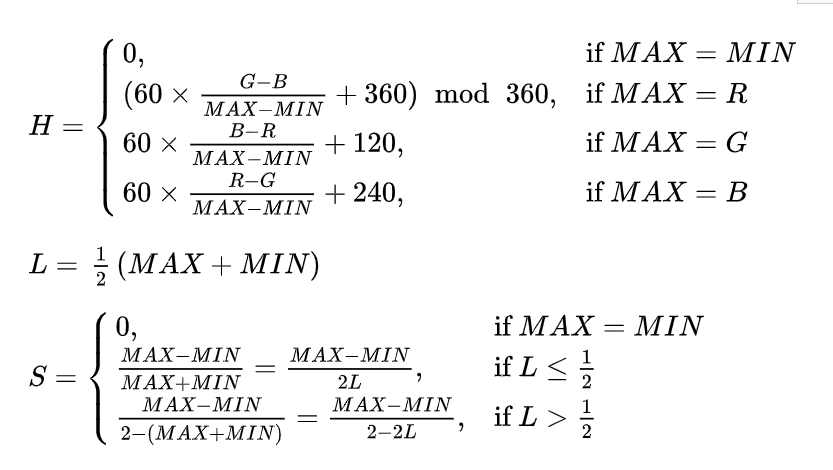

Fechas En un documento html crea un formulario con 3 controles numero que sean año mes y dia que cree una
fecha y te indique cuantos dias han pasado desde el dia 01/02/1970
Indique el año:
Indique el mes:
Indique el día:
Ejercicio2
Horas. Crea un formulario que se comporte como un cronometro. Que cuando pulses un botón empiece a contar
(Deben aparecer en un div los decimas de segundo) hasta que vuelvas a pulsarlo para pararlo y te cuente el
numero de segundo y milisegundos transacurridos. Debes usar el algun metodo para actualizar el cronometro cada
segundo.
Ejercicio3
Number. Location Navigator. Crea un script que tome dos datos latitud y longitud de un formulario y los
valores latitud y longitud del objeto navigator. Con el teorema de pitagoras Distancia = raiz (Lat2 +Long2) y
Asumiendo que un grado terrestre es aproximadamente 111 km calcula la distancia a ese lugar.
Ejercicio 4
4. Fechas Utiliza la libreria date.js para que calcule las siguientes fechas
1. ayer
2. el segundo martes del mes pasado.
3. el primer domingo de octubre.
4. el primer lunes del año pasado.
5. la fecha dentro de dos años
6. la fecha de mañana a las 18:30 p. m.
Ejercicio 5
5. Strings . Crea un script que tome una serie de numeros
separados por coma de un control texto lo convierta
una array y lo recorra para pintar con los numeros
proporcionados como imagenes de la carpeta numbers.
Indique una serie de números separados por coma:
Ejercicio 6
Number y String. Crea un formulario que tome un valor de un control color picker
( puedes hacerlo con el evento onchange o un botón).
Calcule la siguiente formula para pasar de RGB a HSL y lo muestre en un div
(ojo el color picker te devuelve un string con el formato rrggbb )
por lo que para hallar RGB deberas cortarlo con substring y
convertirlo a un numero o usar la funcion parseint
let r = parseInt("FF", 16); // 255

Ejercicio 7
7. imagenes de Document. Crea documento con un script que te genere aleatoriamente entre 4 y 10 imagenes
puedes cogerlas de la carpeta de los numeros o de las cartas o si no quieres hacerlo variable asume que hay
5
imagenes)
Haz un metodo que te haga rotar a la derecha todas las imagenes de cada vez que pulses en un boton ( para
ello
debes usar los objetos document.images[i].src imagen1=imagen2; imagen2=imagen3 .... ) y otro boton que las
haga
rotar a la izquierda
Crea un ejemplo en el que se inserten varias imagenes aleatorias de la carpeta number y las puedas probar.
Ejercicio 8
8. Number Random. Crea un formulario que se comporte como el juego de la 7 y media .
Cuentas con dos botones "Pedir carta" y "Parar".
1. Cada vez que pulsas un boton "Pedir carta" debe sacar un numero aleatorio entre 1 y 10. Debes mostrar el
numero y usar las imagenes proporcionadas con un array.
1. Cada carta numerada del 1 al 9 (1,2, 3, 4, 5, 6, 7) tendrá un valor idéntico a su valor numérico.
2. Las figuras (10,11,12 Jotas, Reinas y Reyes) valen todas medio punto. (en el juego original el 1 vale 1 o
0.5
lo reducimos a 1 para que sea mas facil)
2. En cada jugada el jugador puede sacar cartas o plantarse.
3. Cuando se pulsa el botón parar el sistema genera un numero al azar entre 3 y 10
1. Si te pasas de 7.5 pierdes.
2. Si es mayor tu numero o el suyo es mayor de 7.5 has ganado
3. Si no has perdido.
4. Con el resultado debes poner la imagen correcta y y si ha ganado o perdido y Debes poner un boton
reiniciar.